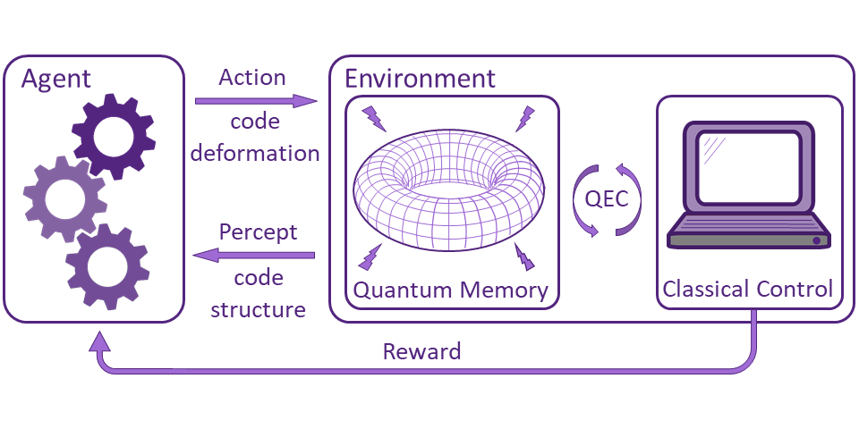
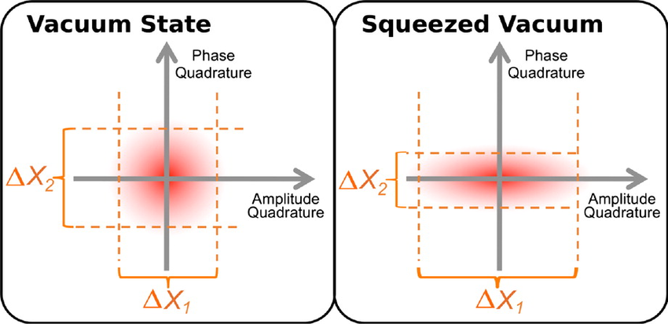

Decoherence: A Challenge in Quantum Computing
Decoherence is a fundamental issue in quantum computing, arising from interactions with the environment that cause quantum systems to lose their coherence and quantum properties over time.
This phenomenon poses a significant challenge in maintaining the delicate quantum states required for quantum computations and preventing information loss.

Error Correction Strategies
Error correction techniques are crucial in mitigating the effects of decoherence and quantum noise. Quantum error correction codes such as the Shor code and the surface code play a vital role in preserving quantum information.
These codes use redundant quantum states to detect and correct errors caused by decoherence and other noise sources, ensuring the reliability of quantum computations.
Understanding Quantum Noise
Quantum noise stems from various sources such as thermal fluctuations, control errors in quantum gates, and interactions with surrounding particles.
Quantum error correction strategies aim to combat these noise sources, allowing quantum computers to execute complex algorithms accurately.
